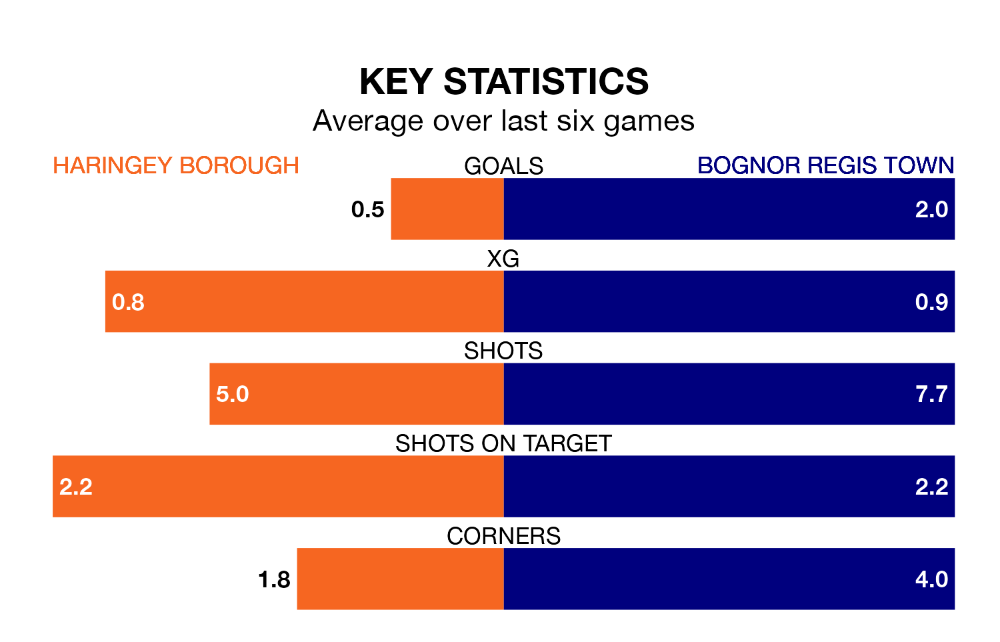

Bognor Regis Town are strong favourites to take all three points despite Haringey Borough's home advantage in Saturday's match at Coles Park.
*Betting Company* are offering odds of 1.67 on Bognor Regis sealing the win, with the visitors sitting eighth in Isthmian Premier Division table.
Haringey, who are 21st in the league and 25 points behind Bognor Regis, are priced at 4 to win. A draw is set at 4.3.
In the last 10 years, Haringey and Bognor Regis have played each other on 10 occasions. Haringey won five of them, Bognor Regis three, and they drew twice.
On average, Haringey scored 1.8 goals and Bognor Regis 1.8 in those matches.
Their last meeting was on November 11, when Bognor Regis won 3-0 at home.
With 24 goals in 27 games so far this season, Haringey are the league's second-lowest scorers with 0.9 goals per game. And they are conceding more than average, letting in 53 goals at a rate of 2.0 per game.
Bognor Regis, meanwhile, are above average scorers, with 1.7 goals per game, compared to a league average of 1.6. They have conceded 1.3 goals per game.
Borough are in disappointing form in Isthmian Premier Division, with one win and two draws from their last six games.
With five wins and one loss over that period, Town's form is much better – they have taken 15 points from 18, compared to the hosts' five.
Haringey's last match was on Tuesday, a 0-0 draw against Concord Rangers.
Bognor Regis beat Billericay Town 1-0 last time out, on January 27.
Updated: 14:12 (UTC), 02/02/24